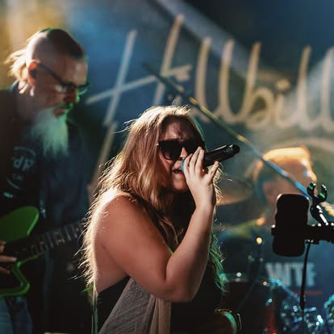
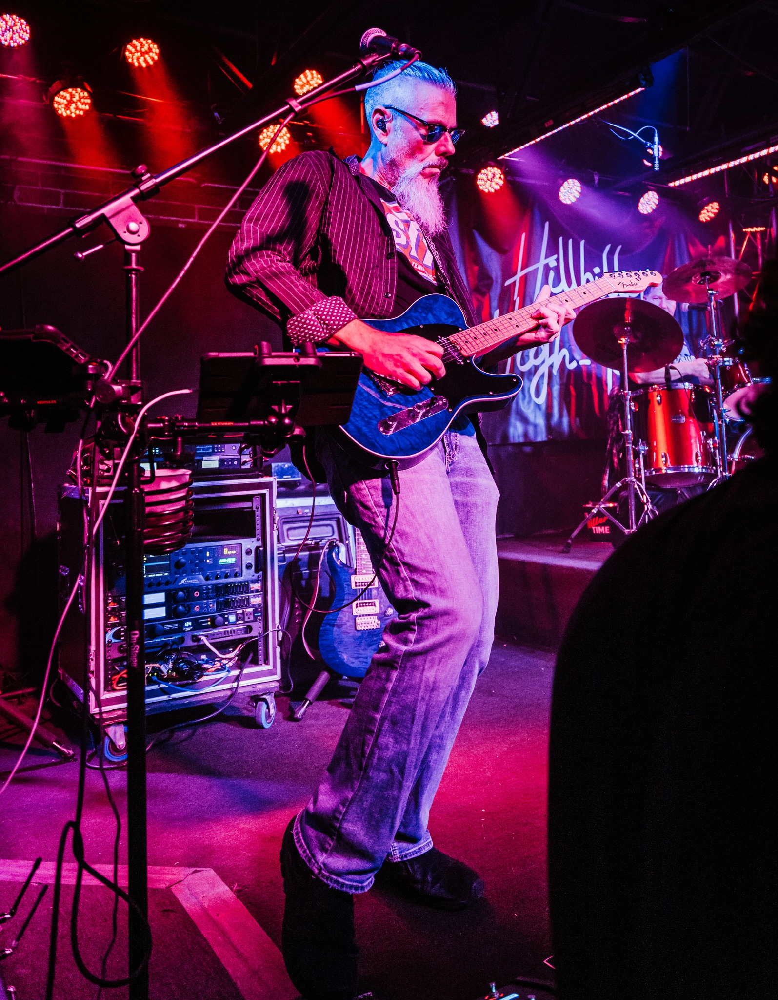
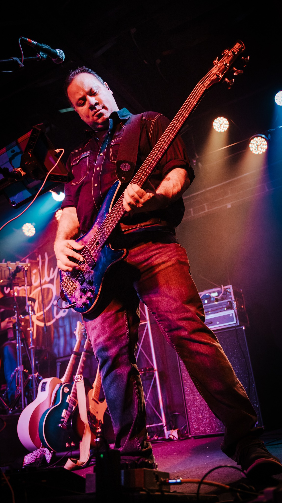
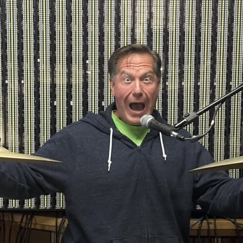

Hillbilly High-Rise delivers a high-energy mix of modern country, rock, and crowd-pleasing party anthems. With powerful vocals, tight musicianship, and a stage presence that fills every room, the band brings a full-throttle live experience built for festivals, bars, private events, and anywhere people want to dance and sing along.

Lead Vocals & Acoustic Guitar
Stephanie Hannel joined Hillbilly High-Rise in 2024 and quickly became one of the
band’s defining voices. A lifelong musician from Lincoln, Illinois, she brings a
powerful blend of vocal strength, clarity, and emotional range that elevates every
song she performs. Her harmonies with Hunter are a signature part of the band’s
sound, and her acoustic guitar adds warmth, rhythm, and texture that round out the
band’s modern country-rock edge. With a natural stage presence and an authentic
connection to the crowd, Stephanie delivers the kind of energy that makes every
performance unforgettable.
Lead Vocals & Guitar
Hunter Lucas brings a natural front-man presence shaped by a lifetime of playing
music around his hometown of Fisher, Illinois. Since joining Hillbilly High-Rise
in 2023, he has become one of the defining voices of the band, blending modern
country grit with rock-driven energy. His vocal power, rhythm guitar work, and
easy connection with the crowd set the tone for every show, whether he’s leading
a high-octane anthem or locking in tight harmonies with Stephanie.

Lead Guitar
Chris McGough has been shaping the sound of Hillbilly High-Rise since joining the
band in 2019, bringing decades of guitar experience and a signature style that
blends precision, feel, and high-energy showmanship. His lead work drives the
band’s modern country-rock edge, delivering melodic hooks, tasteful riffs, and
explosive solos that elevate every performance.

Bass Guitar
Lawrence “Big Low” Horvath has been holding down the low end for Hillbilly
High-Rise since 2019, delivering the deep, driving bass tone that powers the
band’s country-rock groove. With a feel that’s both rock-solid and effortlessly
musical, Big Low locks in with the drums to create the tight, punchy foundation
behind every song.

Drums & Vocals
Merril Myers has been driving the heartbeat of Hillbilly High-Rise since joining
the band in 2020, bringing a powerful blend of precision, groove, and seasoned
musicianship. A veteran of several local bands, Merril anchors the group with
rock-solid timing and dynamic energy that elevates every performance.
Hillbilly High-Rise is available for festivals, bars, private events, corporate shows, and regional venues across the Midwest. For booking inquiries, availability, and rates, please reach out using the contact options below. We respond quickly and are happy to provide set lists, tech specs, and additional media upon request.
Contact Us on Facebook